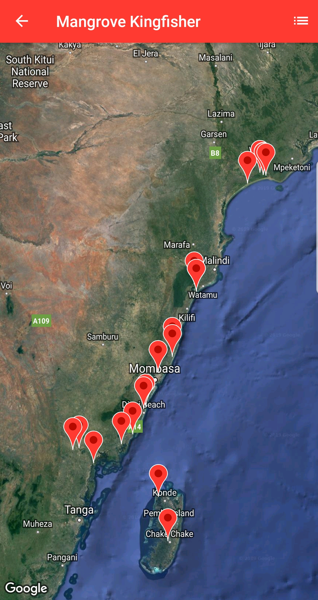

From: Brian Finch <birdfinch@gmail.com>
Date: 2019-08-30 07:23
Subject: Fwd: [KENYABIRDSNET] MANGROVE KINGFISHER, RANGE, SEASONALITY, BREEDING AND DIET [1 Attachment]
Hi Hugh,
Here is the first support that contrary to all the literature it isn't
resident (except maybe Tana) and it isn't a breeding bird on most of
the Kenya coast, but a winter visitor June to Nov,
Best for now
Brian
---------- Forwarded message ----------
From: Mustafa Adamjee <madamjee.ma@gmail.com>
Date: Thu, 29 Aug 2019 18:50:17 +0300
Subject: Re: [KENYABIRDSNET] MANGROVE KINGFISHER, RANGE, SEASONALITY,
BREEDING AND DIET [1 Attachment]
To: Brian Finch <birdfinch@gmail.com>
Hi Brian
To my knowledge, I know the Mangrove Kingfisher as an Intra African Migrant
at the coast. I usually see them from June to November on my birding trips.
The only place I see them off the typical period is at the Tana Delta,
which I think might have resident breeding birds, because we have seen them
quite a few times on Waterfowl counts. It probably needs more visits to
tana delta at different times of the year to confirm this.
My Birdlasser data shows me the same, all my records of Mangrove
Kingfishers South of the Tana Delta are during June-November(picture of
records attached)
So maybe we have both resident and migratory??
I'm not too sure about their feeding habits but I have seen one with a good
sized grasshopper in Ngunni(2017) and one with a mud crab(in a mangrove
forest) this year in Msambweni, South Coast.
I think Colin Jackson can give more info on them as they are ringed
frequently at watamu.
Regards
Mustafa Adamjee
On Thu, 29 Aug 2019, 12:28 pm Brian Finch birdfinch@gmail.com
[kenyabirdsnet], <kenyabirdsnet-noreply@yahoogroups.com> wrote:
>
>
> Dear All,
> A friend and well-known author in South Africa Hugh Chittenden, has
> asked me about the diets at the nest site and away from the nest of
> Mangrove Kingfisher in the East African region. I told him that living
> a long way from the coast I had little intimate experience with the
> species. But I would put his queries on the net, advising that we have
> very many dedicated birders living along the coast, and they would
> surely be able to assist with some details.
>
> What he found is that Mozambique birds feed on crabs almost
> exclusively in the winter, but move inland to breed in wooded areas
> and then live on a crab-free diet and feed this to their young.
>
> In KZNatal the birds are present only as non-breeding wintering birds
> and feed almost exclusively on crabs, then migrate south in summer to
> breed on the Eastern Cape when they appear to feed on invertebrates
> and not crabs, and crabs seem not to be in the diet that they feed
> their young.
> Hugh was asking the question, is there an important reason for this
> change of diet seasonally. (See attachment).
>
> He was asking what they feed their young on at the nest in East
> Africa, and the diet when non-breeding. Personally I have only thought
> of Mangrove Kingfisher as a migrant from further south rather than a
> breeding bird, but they do seem to call territorially.
> They are a breeding resident on Pemba Island, but only seasonal to
> Zanzibar, and there must be some information from these two islands.
> The local literature does not suggest that it is a migrant in EAf, in
> fact it states that it is a resident along the entire seaboard.
>
> They do wander, and I have only ever seen one bird that was obviously
> lost and that was in Tanzania on the Pangani River west of the
> Usambaras (where the Black-bellied Sunbirds breed).
>
> So it would appear that Hugh has a very interesting subject that he is
> studying and it would be great to help him out with all the
> information from EAf that we can provide. From reading what is said
> about our birds, we still have much to learn too, as I think that to
> call it just a breeding resident is oversimplification.
>
> This is what Hugh wrote, and there is an attachment…
>
> “Hi Brian,
> …I'd like to request info from you regarding Mangrove Kingfishers. I
> have been monitoring this species of late. They are winter visitors
> here (Mtunzini, just south of Richards Bay). I'll forward recent
> correspondence and photos in a separate email.
> The two different populations in southern Africa have different
> breeding strategies. The South African population migrates south to
> the eastern Cape estuaries to breed, then returns to n KwaZulu-Natal
> region for winter. The Mozambique birds act differently. They simply
> move inland and breed in termitaria they find in lowland
> forest/woodland during the breeding season. No suitable termitaria in
> South Africa.
> So, the southern African birds essentially have a summer and a winter
> diet. The winter diet is predominantly crabs (mangrove habitat), and
> summer a mix, with few, if any crabs I should think. There is little
> published data on food delivered to nests.
> I have been trying to understand these feeding regimes because it
> interests me why Mangrove Kingfishers in SA migrate south to breed
> when there are Barbet and Woodpecker holes available to them here in
> KZN??
> I'd be interested in what your birds feed on summer, versus winter?
> Regards
> Hugh
>
> Hugh’s email is <hugh@rarebirds.co.za>
>
> It would be interesting to copy your email to kenyabirdsnet, so we can
> all see the interesting facts emerging,
>
> Best to all
> Brian
>
